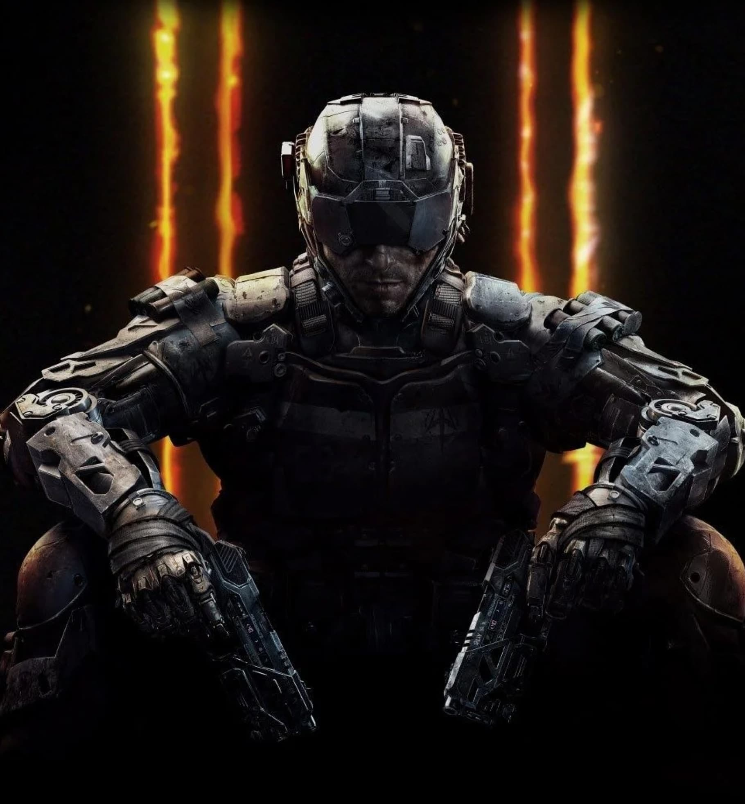
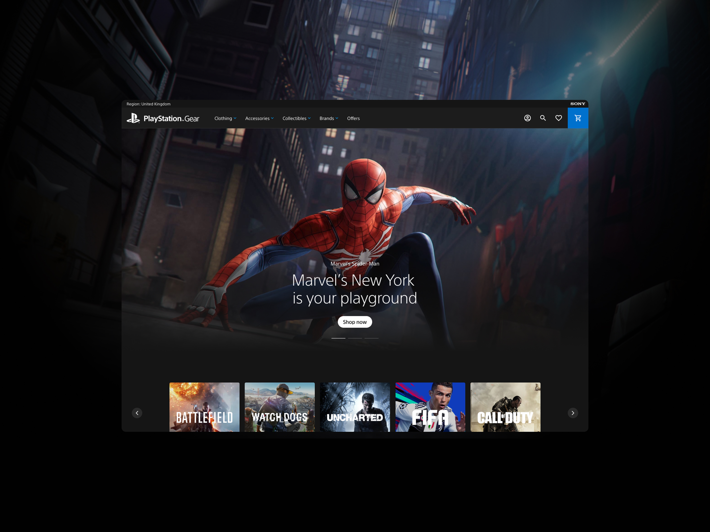
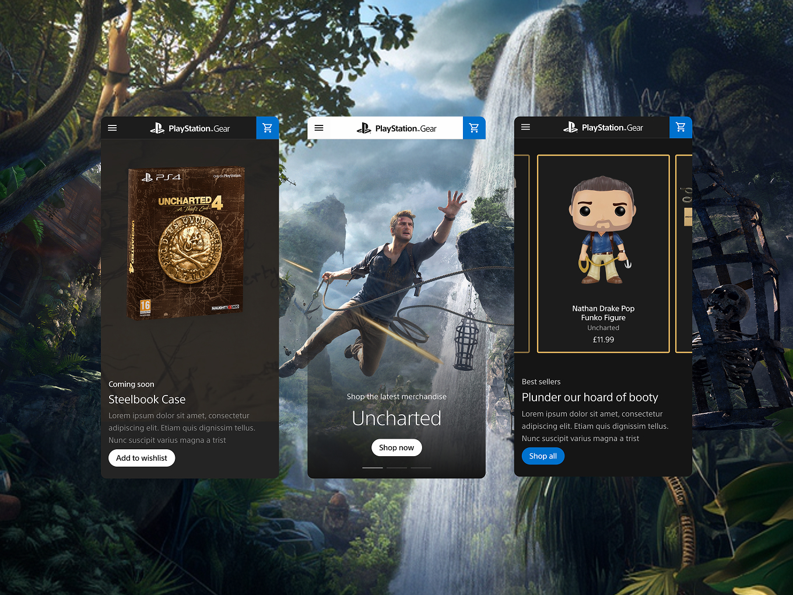
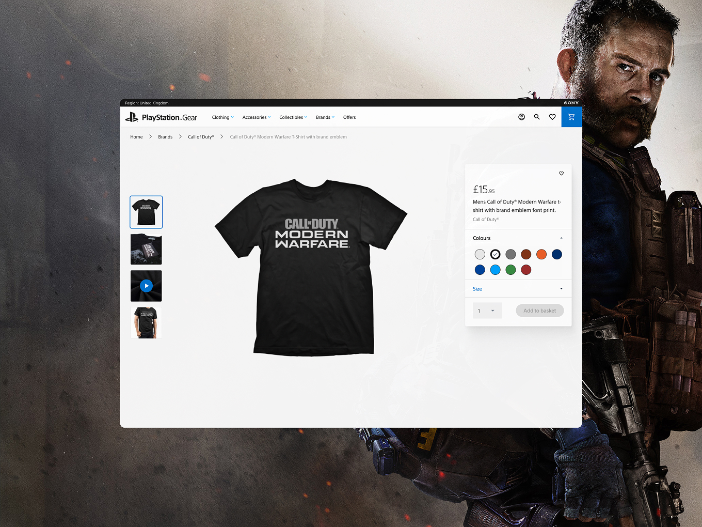
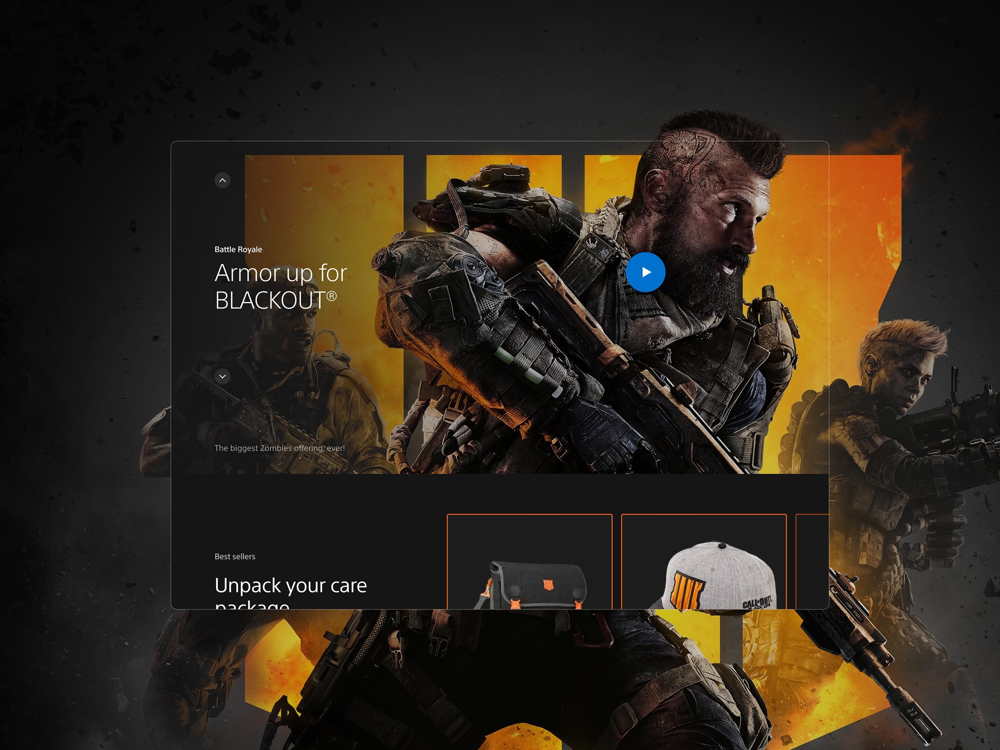
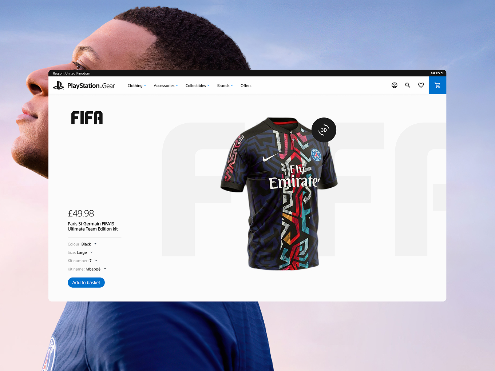
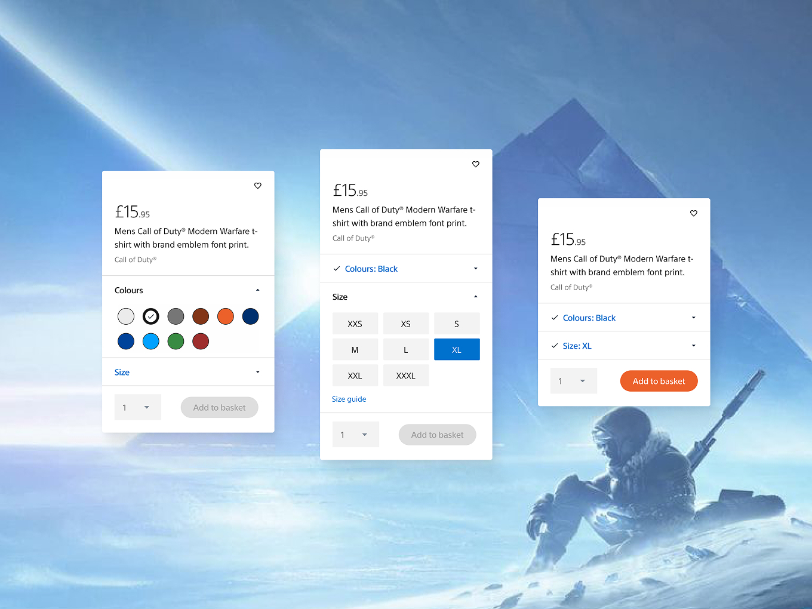
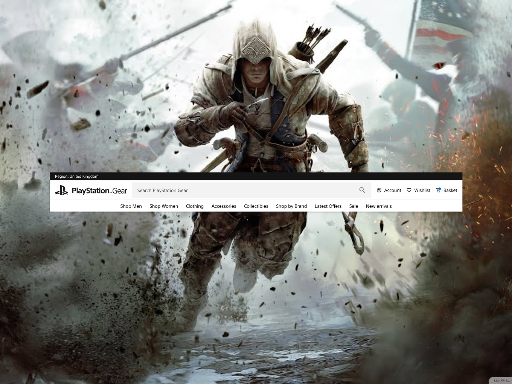
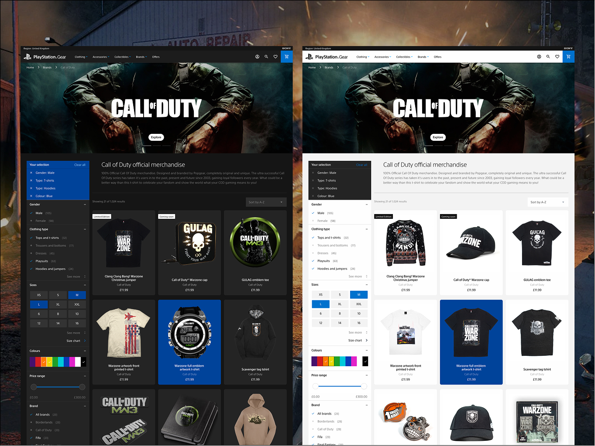

PlayStation Gear
Built for Players, Not Just Buyers
PlayStation Gear is the official global merchandise store for Sony PlayStation, built for an 80 million strong player base to shop official clothing, accessories and collectibles. I led design from discovery through to launch and years of post-launch iteration. It scaled to over 3 million sessions a year, cut checkout drop-off by 73%, and won four industry awards.
Results
- 3M+ sessions a year (650k organic, 500k paid), up from zero search visibility pre-launch
- Checkout cut to 3 clicks, reducing basket drop-off by 73%
- 2,000+ core search queries ranked, up from 250 before launch
- 4 industry awards, including Awwwards E-commerce Platform of the Year

The Challenge
PlayStation didn't have a proper home for its merchandise. What existed felt generic rather than built for gamers, and it wasn't doing the brand any favours. Sony needed somewhere as immersive as the products themselves, capable of handling complex global commerce and multiple brand franchises, on a tight deadline tied to E3 and Days of Play.


The Approach
As hands-on Head of Design, leading a team of 8 across design, content, motion and development, I ran a three day discovery workshop with Sony to nail down business goals, customer needs and information architecture.
The standout insight: nine out of ten customers were hesitant to hand over personal details at registration, which is what led me to simplify checkout down to the bare minimum, the decision behind the project's strongest result.
From there I led art direction and the design system myself, working closely with our Senior UX Designer on wireframes, building everything around atomic design so components stayed consistent but could flex for dark mode and different brand franchises like Call of Duty and Horizon.
Sony's brand guidelines were strict, governing everything down to CTA styling and image crops, and I spent a fair amount of time pushing back to Sony's marketing directors and brand guardians on where those rules genuinely served the user versus where they just made the experience feel less like PlayStation Gear and more like a generic Sony page.
One deliberate call I made: analytics showed only 15% of traffic was mobile, so I designed desktop first rather than defaulting to mobile first. I tested constantly throughout, using LookBack, UserTesting.com and Hotjar to validate real user behaviour, not just internal assumptions.
Design itself started in Sketch and Adobe XD, moving over to Figma later as the platform's life stretched on for years.

The Outcome
The MVP launched on time for E3 and Days of Play, growing from zero search visibility to over 3 million sessions a year. The standout design metric: cutting checkout down to 3 clicks reduced basket drop-off by 73%, real evidence the UX decisions were doing the heavy lifting, not just the marketing push. Those same decisions, the simplified checkout, the flexible design system and the immersive art direction, are what the platform was recognised for, picking up four industry awards including Awwwards' E-commerce Platform of the Year.
I stayed on for years after to lead conversion rate optimisation and continued feature work: game landing pages, a redesigned navigation, expanded checkout options and a full dark mode rollout once data showed 85% of customers preferred it, alongside seasonal marketing campaigns for Black Friday and Valentine's Day that kept the platform evolving well beyond the initial launch.


Reflection
What stands out most looking back is how much of the long term success traced back to a single insight from those first three days of workshops, not a redesign years later, but the decision to simplify checkout based on what customers told me upfront. It's the project that shaped how I still work now: dig for the real friction before touching a single screen, then defend that decision through whatever constraints come after, whether that's a brand guideline or a stakeholder who'd rather play it safe.

